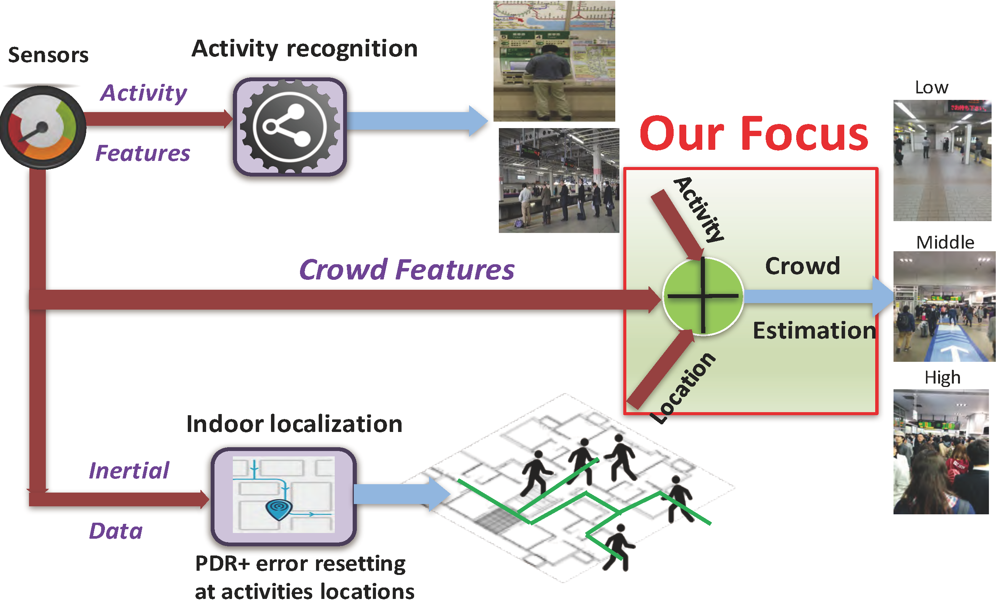
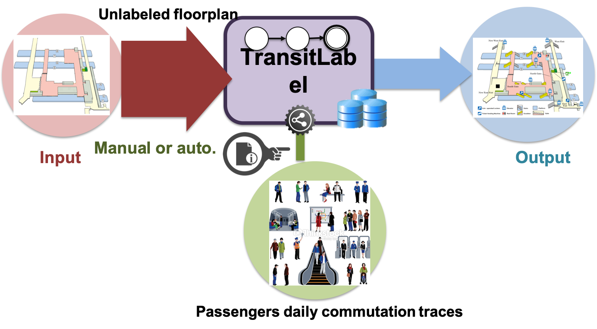
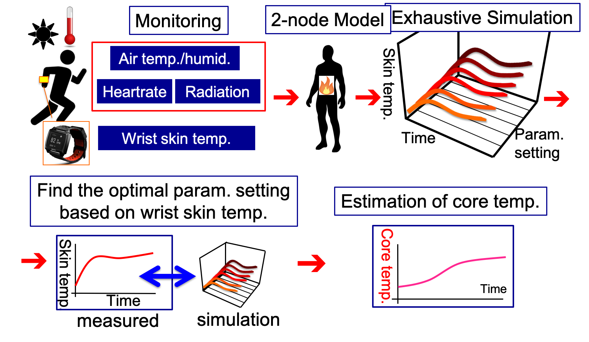
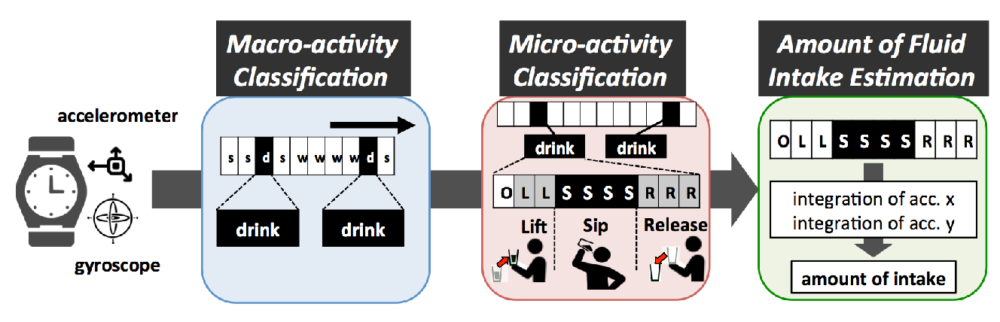
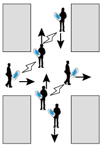
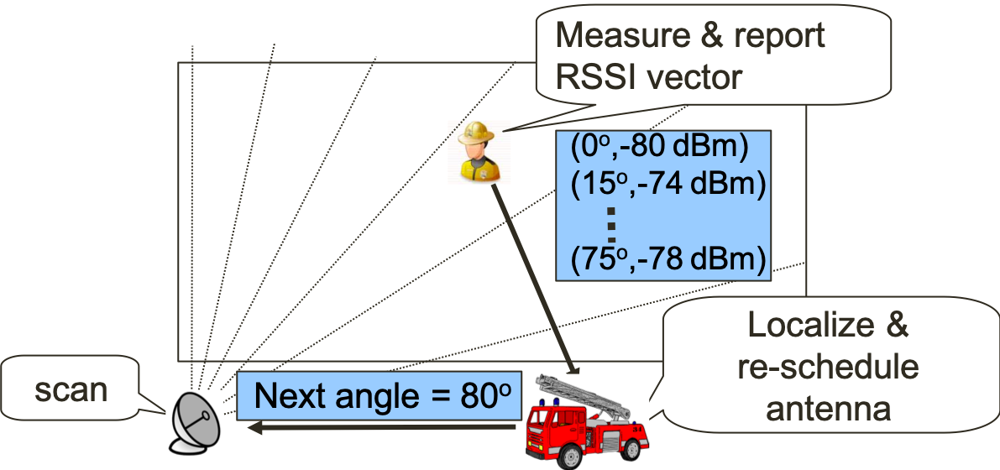

研究
現在の主な研究分野は、モバイルセンシング・コンピューティング（IoTセンシング、バックスキャッタセンシング）、コンテキスト認識（都市混雑、人の行動認識）、およびヘルスケア（深部体温推定など）です。
バッテリレスIoT
IoTデバイスは今後膨大な数に達すると予測されており、バッテリ管理の負担が大きな課題となります。本研究では、エネルギーハーベスティングとアンビエントバックスキャッタ通信を組み合わせ、極めて低い消費電力で無線通信を実現することにより、バッテリレスセンサ間の協調動作を実現します。複数のデバイスで収集したエネルギーを統合してアプリケーション要件を満たす「持続可能なIoTプラットフォーム」の構築を目指しています。

都市コンテキスト認識

CrowdMeter — 駅構内における混雑度推定
CrowdMeter は、通勤時に乗客のスマートフォンから収集したセンサデータを活用し、駅構内の混雑度をリアルタイムに推定する参加型センシングシステムです。乗客の駅構内における位置とコンテキスト（電車待ち、券売機の利用など）を入口から乗車までの経路に沿って認識し、歩行パターンや周辺音などの新たな特徴量を抽出します。これらの特徴量は乗客の行動や周辺環境を捉え、経路上の混雑度を表す指標となります。最終的に、駅の各エリアを混雑度（低・中・高）に応じて青・黄・赤で色分けします。日本国内 29 駅でのフィールド実験により、混雑度を高精度に推定可能であることを示しました。
TransitLabel — 駅構内のセマンティック情報抽出
TransitLabel は、駅構内屋内地図に券売機・改札・自動販売機・プラットフォーム・乗車待ち列・トイレ・ロッカー・待合エリアなどのセマンティック情報を自動付与するクラウドセンシングシステムです。乗客の特定の行動（券購入、改札通過など）が携帯センサ上に識別可能なシグナルを残すという観察に基づき、行動を自動認識してそれに紐づくセマンティック情報を推定します。乗客位置の不正確さがあっても、セマンティック情報の位置を高精度に推定できます。日本国内 8 駅でのフィールド実験により、セマンティック情報を高精度（FP 7.7%、FN 7.5%）に検出し、平均 2.5m 以内の精度で位置を推定できることを示しました。

ヘルスケア

深部体温推定
個人差を考慮した人体熱モデルに基づく深部体温推定法を提案しています。Gagge の二要素モデルに基づき、コア部・皮膚部・環境間の熱交換と体内発熱を計算することで、深部体温と皮膚温の変化をシミュレーションします。ウォームアップフェーズで、個人の体温調節機能と身体特性を表す最適パラメータセットを総当たり探索により決定します。さらに、熱伝達遅延や体温調節応答の遅れなど、原モデルへの改良により推定精度を向上させました。ランニング・歩行・自転車・テニスにわたる 120 時間以上の実験により、推定誤差を低減できることを示し、複数の企業や他分野研究者との共同研究にもつながっています。
FluidMeter — 飲水量推定
水は人体の約 60% を占める最も重要な栄養素であり、適切な健康維持のため日々の十分な水分摂取が重要です。本研究では、スマートウォッチの慣性センサを利用してユビキタスかつ非侵襲に飲水量を計測する FluidMeter を提案します。まず、飲水動作と他の活動（運動、食事など）を分離し、飲水動作中のマイクロアクティビティ（持ち上げる、飲む、置く）を認識します。最後に、機械学習を用いて飲む期間中のセンサデータから飲水量をグラム単位で推定します。70 名・260 時間以上の活動データを複数のスマートウォッチで収集した評価により、飲水動作とそのマイクロアクティビティを高精度に認識し、飲水量を 15% 以下の誤差で推定可能であることを示しました。

モバイル位置推定


都市部における移動端末の位置推定のため、アドホック通信を活用した日和見的位置推定アルゴリズム UPL（Urban Pedestrians Localization）を提案しました。UPL は、配置コスト制約により位置ランドマークが疎にしか配置されないことを前提とし、各端末は近隣端末から受信した位置情報を用いて自身の存在領域を推定します。移動に伴って存在領域は不正確になりますが、それを他の端末の存在領域削減に活用できます。さらに、壁などの障害物情報を活用して移動可能領域を計算し、移動下でも高精度な存在領域予測を実現します。実験により、無線到達距離 r に対し平均 0.7r 以下の位置誤差で推定可能であることを示しました。
また、消防士向けの携帯電話位置推定として、対象建物周辺に WiFi 指向性アンテナを配置する手法も研究しました。さらに、相対位置誤差の評価指標、人密度推定、GPS 精度向上に関する複数の論文を国際会議・論文誌に発表しています。
研究費獲得実績
- 「Beyond 5G通信エッジ・モバイルコア統合制御」, NICT 革新的情報通信技術研究開発委託研究, 2024–2027.
- 「無線センシングにおける行動認識ブートストラップ機構の研究」, 代表, JSPS 科研費 基盤研究(B), 2024–2026.
- 「仮想センシング基盤『Vsens』と整形外科疾患推定・回復支援システム」, JST AIP 加速課題, 2025–2026.
- 「パッシブIoTデバイスネットワークによるアンビエント環境認識基盤」, 連携, JSPS 科研費 基盤研究(S), 2019–2024.
- 「無線センシングによる持続可能なIoT基盤の創出」, 代表, JST さきがけ, 2019–2023.
- 「アンビエントバックスキャッタ通信を用いたバッテリレスセンシングシステムの開発」, 連携, JSPS 科研費 挑戦的研究（萌芽）, 2018–2022.
- 「協調型バッテリレスセンサによる持続可能なIoT基盤の開発」, 代表, JST ACT-I, 2016–2017.
- 「スポーツ・リサーチ・イノベーション拠点（SRIP）」, 文部科学省 スポーツ庁, 2015–現在.
- 「都市交通システムにおける参加型センシングによるコンテキストセンシング」, 代表, JSPS 科研費 若手研究(A), 2014–2017.
- 「ウェアラブルセンサを用いたリアルタイム・低コストな深部体温推定」, 代表, JSPS 科研費 挑戦的萌芽研究, 2014–2015.
- 「デバイス多様性に対応する堅牢で低コストな WLAN 位置推定」, 代表, JSPS 科研費 若手研究(B), 2011–2013.
- 「ユビキタスネットワークにおけるアドホック通信を用いた高効率な移動端末密度推定」, 代表, JSPS 科研費 研究活動スタート支援, 2009–2010.
出典: researchmap